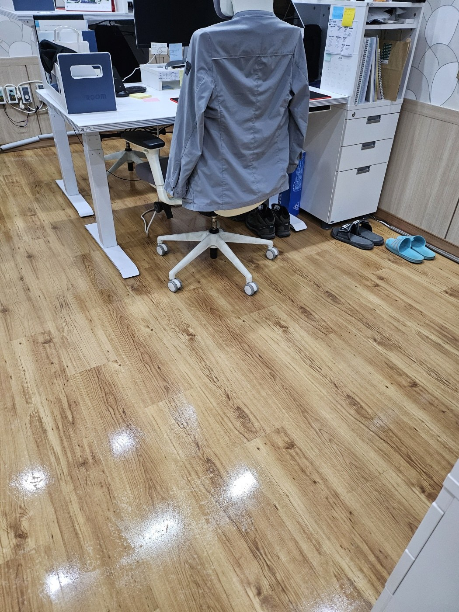
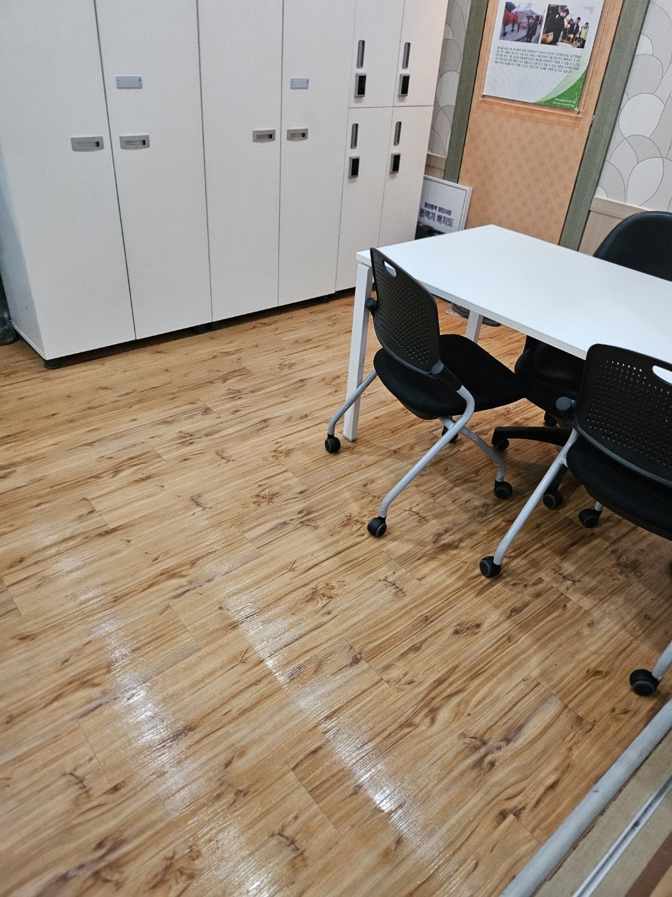
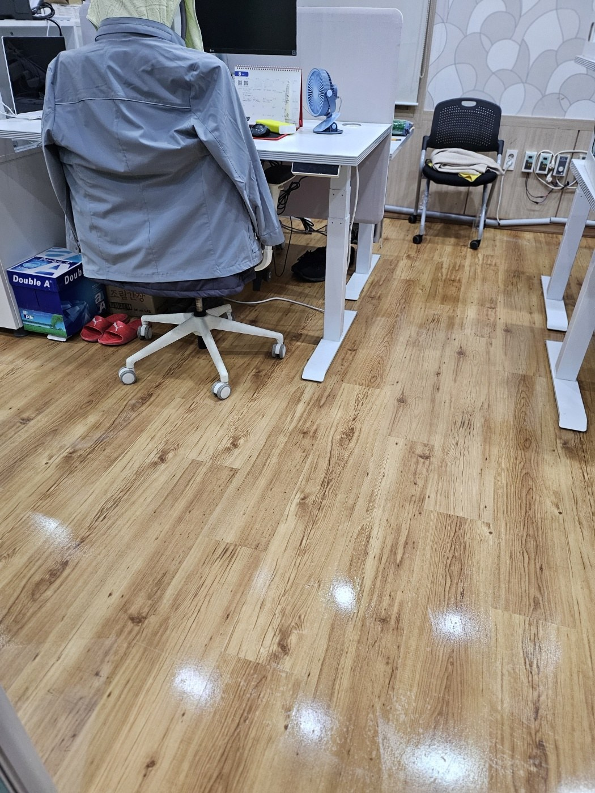
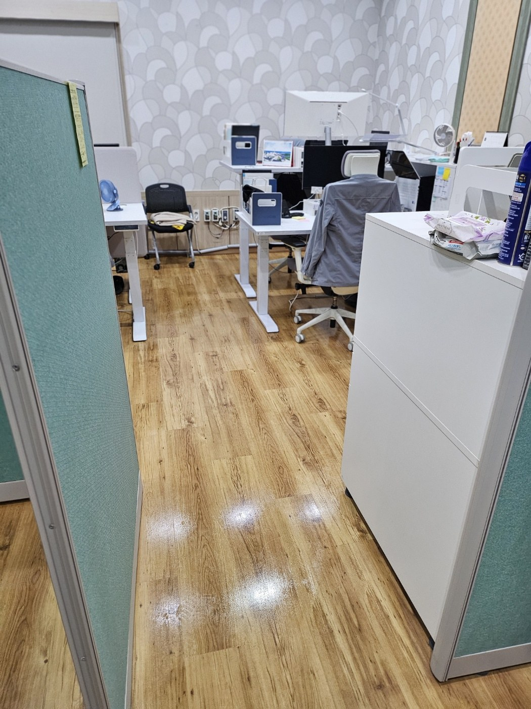
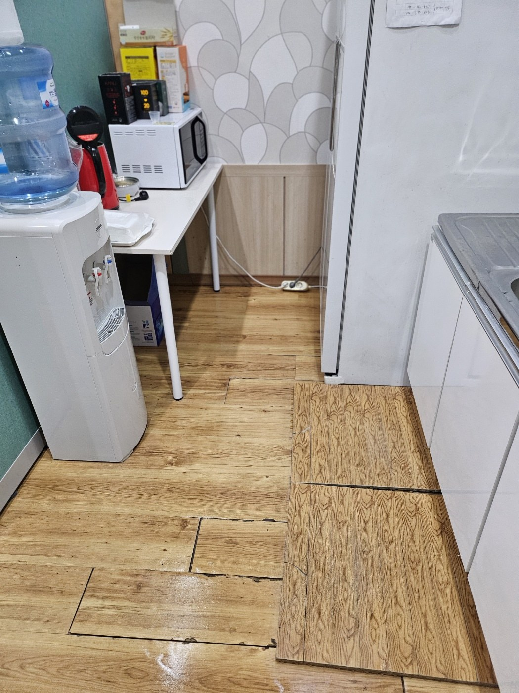
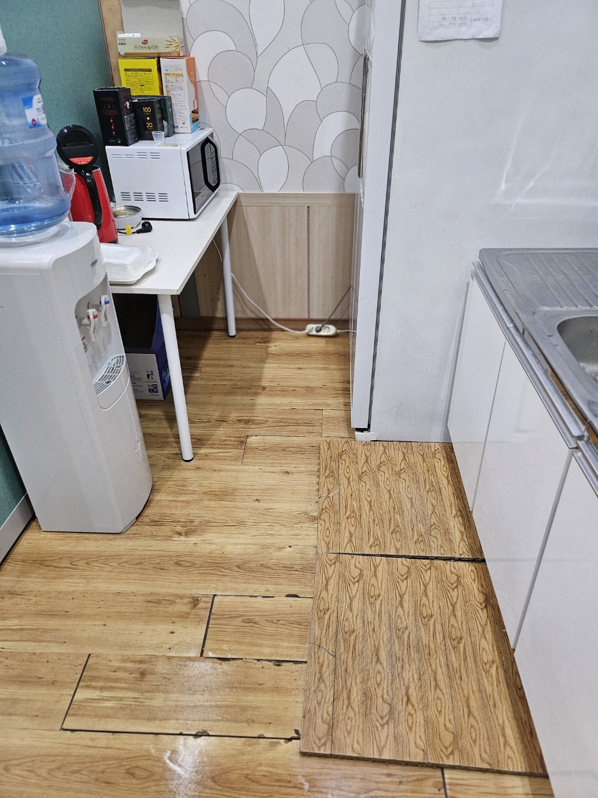

의자와 책상 주변은 먼지가 집중됩니다
업무공간은 의자를 움직일 때 생기는 미세먼지와 머리카락, 신발 오염이 책상 아래에 모이기 쉽습니다. 눈에 보이는 중앙만 닦지 않고 의자 바퀴 주변과 책상 다리 사이를 함께 정리해야 전체 상태가 깔끔하게 유지됩니다. 물걸레 마감 후에는 미끄러움과 잔여 수분을 확인합니다.

회의공간은 의자 이동 흔적을 함께 봅니다
회의테이블 주변은 의자 이동이 반복되어 바닥에 먼지와 자국이 생기기 쉽습니다. 테이블 아래와 캐비닛 앞을 구역별로 청소하고, 바닥에 물기가 오래 남지 않도록 마감합니다. 직원이 바로 사용할 수 있는 상태로 정돈하는 것이 중요합니다.

업무 중 자주 밟는 동선부터 관리합니다
사무실에서는 출입구에서 책상으로 이어지는 동선에 오염이 집중됩니다. 바닥 전체를 같은 강도로 닦기보다 사용량이 많은 길목을 먼저 정리하고 주변까지 연결해 마감합니다. 정기청소는 이런 반복 오염을 누적시키지 않는 것이 핵심입니다.

출입구는 외부 먼지가 가장 먼저 들어옵니다
외부 신발 오염이 실내로 들어오는 첫 구역이 출입구입니다. 모래와 먼지를 먼저 제거한 뒤 바닥을 닦으면 미세한 흠집과 얼룩을 줄일 수 있습니다. 문틀과 파티션 하단 주변까지 함께 확인하면 깔끔한 인상이 오래갑니다.

탕비공간은 물기와 음식물 잔여물을 함께 관리합니다
정수기와 전자레인지 주변은 물방울과 작은 부스러기가 반복해서 생깁니다. 바닥 오염을 정리하고 싱크대 주변, 가구 하단, 전선이 많은 구역은 안전하게 접근합니다. 세제 사용 후 미끄러움이 남지 않도록 마감합니다.

좁은 공간일수록 가장자리 관리가 중요합니다
탕비공간은 가구와 장비가 많아 청소도구가 닿기 어려운 구석이 생깁니다. 벽면과 냉장고 주변, 테이블 다리 사이를 확인해 눈에 띄는 먼지와 얼룩을 줄입니다. 정기적으로 관리하면 한 번에 많은 시간을 들이는 대청소를 줄일 수 있습니다.
김해 장유 사무실청소는 업무시간과 인원수를 함께 고려합니다
같은 크기의 사무실이라도 상주 인원과 방문객 수, 신발 착용 방식, 탕비실 사용량에 따라 오염 속도가 달라집니다. 퍼펙트케어는 직원 동선을 확인해 필요한 관리 범위와 횟수를 안내합니다.
주 1회부터 주 6회까지 현장별 상담이 가능합니다
사무실 정기청소는 바닥, 공용공간, 화장실, 탕비실 등을 묶어 관리할 수 있습니다. 필요한 구역만 선택하는 방식도 가능하며, 무료 방문견적에서 현장 상태를 확인한 뒤 맞춤형으로 안내합니다.
현장에 맞춘 무료 방문견적
정기청소와 상가·사무실·화장실 청소는 공간 크기만으로 동일한 견적을 내기 어렵습니다. 퍼펙트케어는 현장의 이용량, 바닥 재질, 오염도, 관리 범위를 확인한 뒤 필요한 작업을 안내합니다.